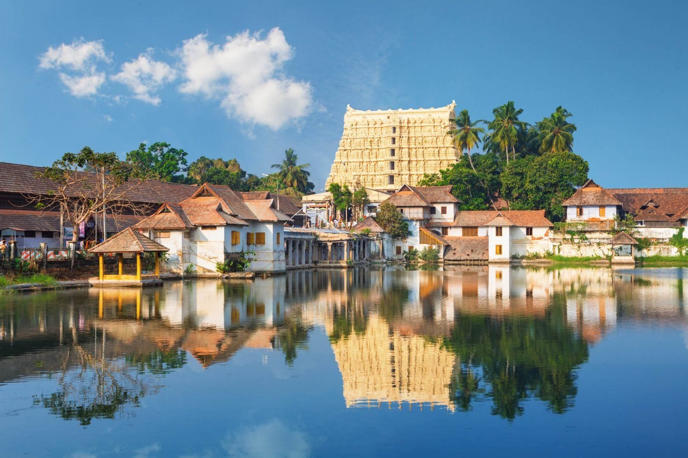
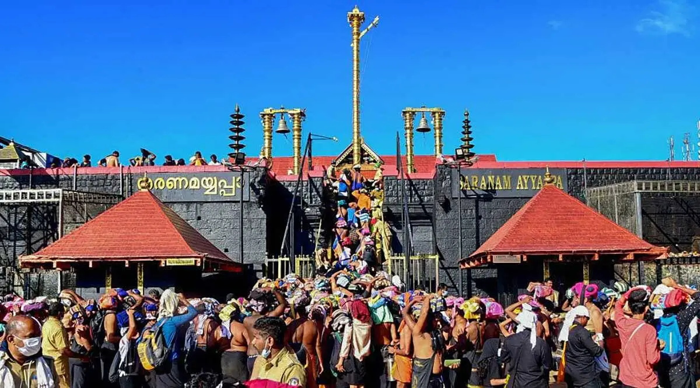
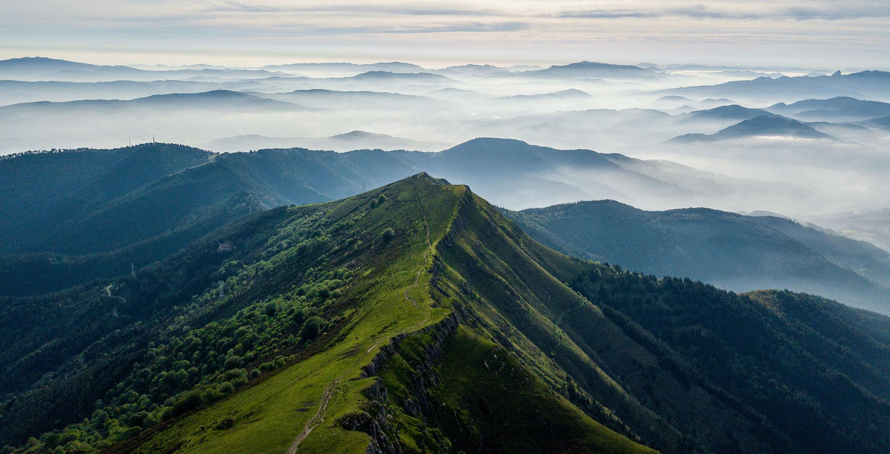
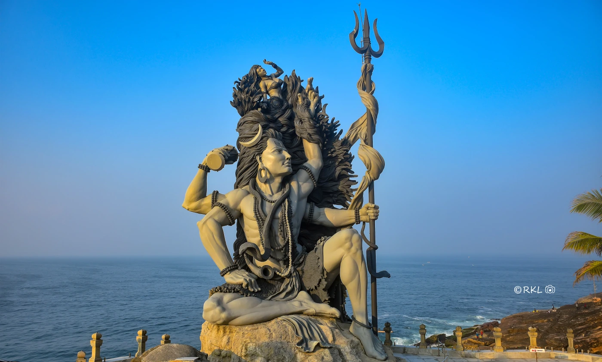

Munnar
Munnar is a town in the Western Ghats mountain range in India’s Kerala state. A hill station and former resort for the British Raj elite, it's surrounded by rolling hills dotted with tea plantations established in the late 19th century. Eravikulam National Park, a habitat for the endangered mountain goat Nilgiri tahr, is home to the Lakkam Waterfalls, hiking trails and 2,695m-tall Anamudi Peak.
click here

Alleppey
Alappuzha (or Alleppey) is a city on the Laccadive Sea in the southern Indian state of Kerala. It's best known for houseboat cruises along the rustic Kerala backwaters, a network of tranquil canals and lagoons. Alappuzha Beach is the site of the 19th-century Alappuzha Lighthouse. The city's Mullakkal Temple features a traditional design. Punnamada Lake's snake boat races are a well-known annual event.
click here

Kochi
Kochi (also known as Cochin) is a city in southwest India's coastal Kerala state. It has been a port since 1341, when a flood carved out its harbor and opened it to Arab, Chinese and European merchants. Sites reflecting those influences include Fort Kochi, a settlement with tiled colonial bungalows and diverse houses of worship. Cantilevered Chinese fishing nets, typical of Kochi, have been in use for centuries.
click here

Thiruvananthapuram
hiruvananthapuram (or Trivandrum) is the capital of the southern Indian state of Kerala. It's distinguished by its British colonial architecture and many art galleries. It’s also home to Kuthira Malika (or Puthen Malika) Palace, adorned with carved horses and displaying collections related to the Travancore royal family, whose regional capital was here from the 18th–20th centuries.
click here

Sabarimala
The Sabarimala Sree Dharma Sastha Temple is a Hindu temple that is devoted to the worship of a deity named Ayyappan, also known as Dharma Shasta. Ayyappan is believed to be the son of Shiva and Mohini.
click here

Wayanand
Wayanad is a rural district in Kerala state, southwest India. In the east, the Wayanad Wildlife Sanctuary is a lush, forested region with areas of high altitude, home to animals including Asiatic elephants, tigers, leopards and egrets. In the Ambukuthi Hills to the south, Edakkal Caves contain ancient petroglyphs, some dating back to the Neolithic age.
click here

Varkala
Varkala is a town in the south Indian state of Kerala. It’s on the Arabian Sea and known for Varkala Beach, backed by palm-covered red cliffs. Just south, Papanasam Beach is believed to have holy waters. On a nearby hill, the ancient Janardanaswamy Temple is a Hindu pilgrimage site dedicated to Vishnu. Farther inland, the Sivagiri Mutt monument memorializes the social reformer Sree Narayana Guru, who is buried here.
click here

Azhimala Shiva Temple
The Aazhimala Shiva Temple is a Hindu temple located on the coast of the Arabian Sea near Vizhinjam in the Thiruvananthapuram district of Kerala, India. Dedicated to Shiva, the temple is known for the 18 m (58 ft) tall Gangadhareshwara sculpture, which is the tallest Shiva sculpture in Kerala.
click here